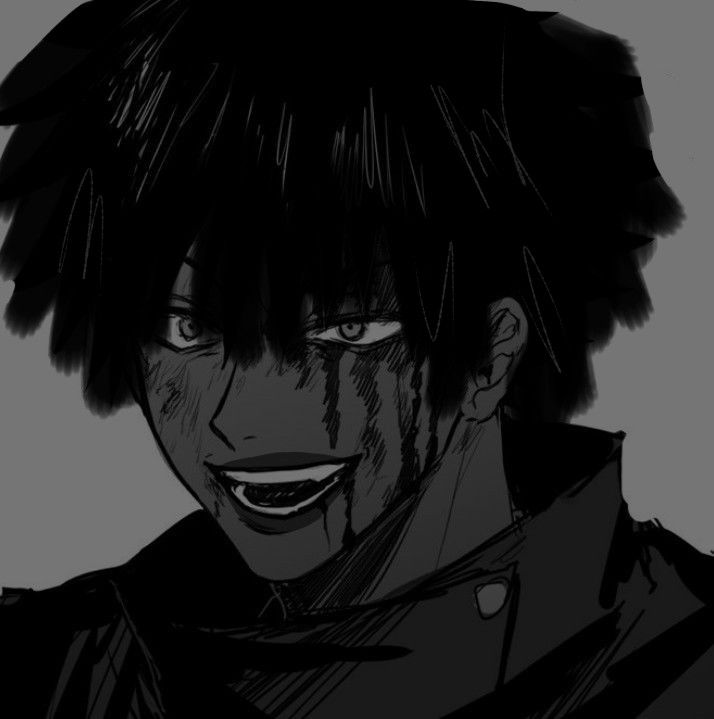

Amalraj Rajan

Summary:
Education:
- 2014: Passed my 10th Board with 79.20%
- 2016: Passed my 12th Board with 50.92%
- 2019: Graduated from BSC.IT with 7.75 CGPA
- 2022: Completed my post graduation with 8.02 CGPA
Work Experience:
- 2019-2020:
- Worked in Eclinicalworks as a software specialist
- 2022-2023:
- Worked in Sutherland as a Service Management Executive
Skills:
- Customer Engagement:
- Better at client Engagement
- Better at Organizational skills
- Web Developer skill:
Others:
About Me
My Hobbies